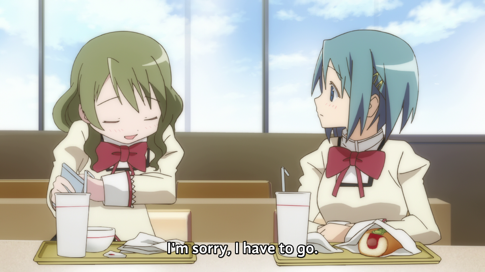
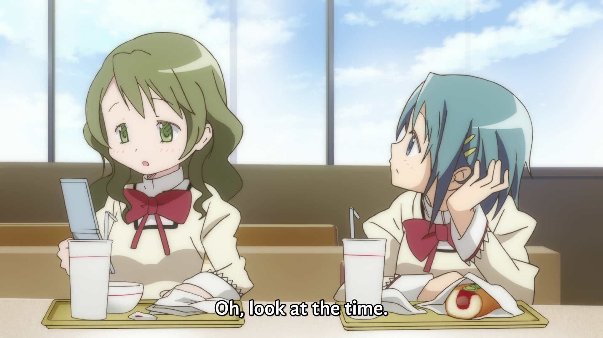
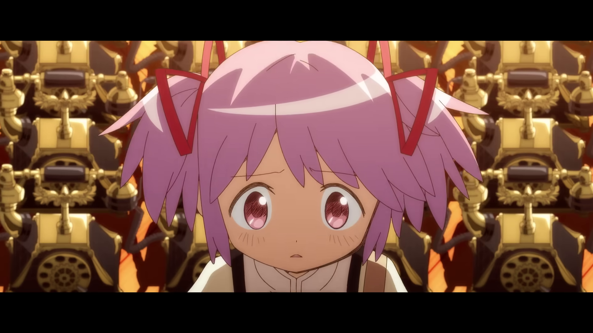
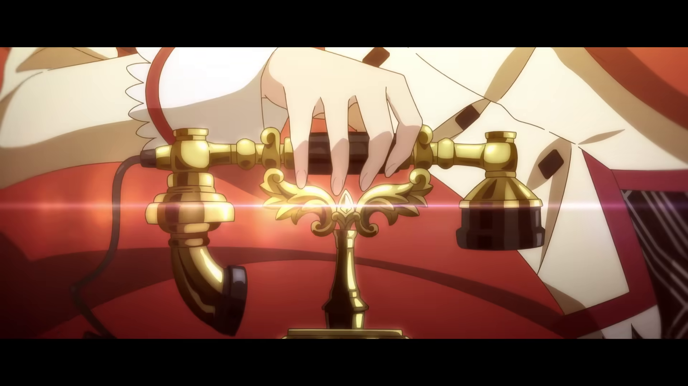
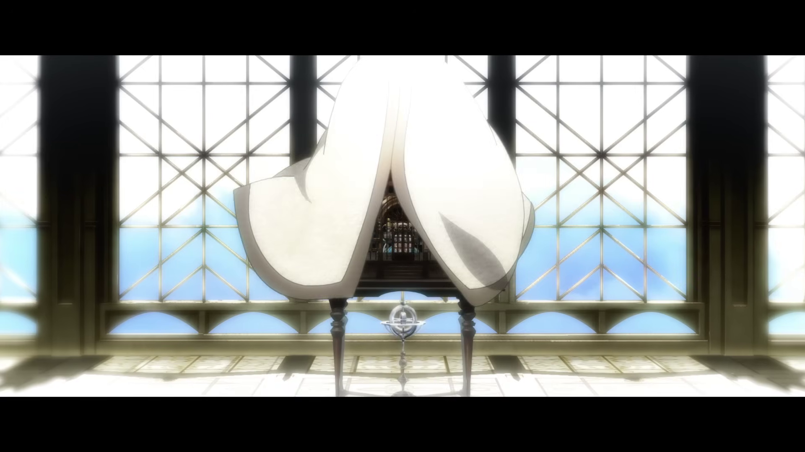
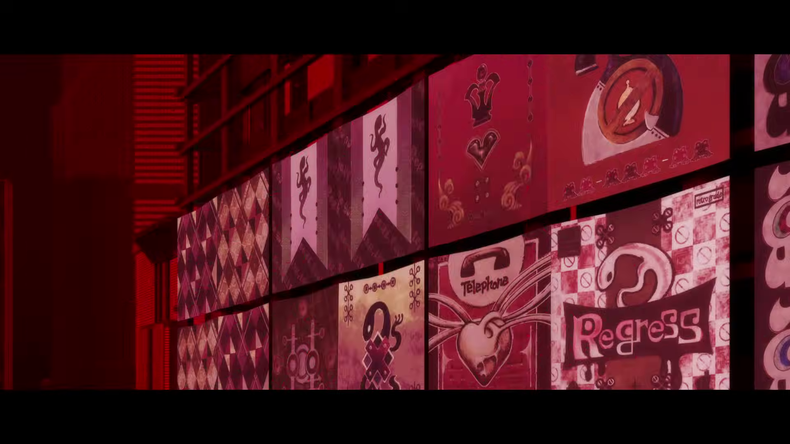
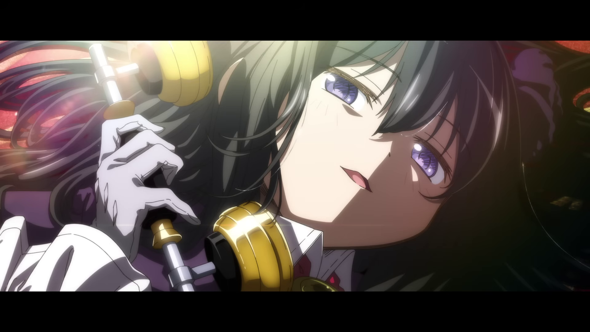

This section contains both spoilers, and speculation for Walpurgisnacht Rising. Reader caution is advised.
Phones, and cellphones in general, had been used rather sparingly in Puella Magi Madoka Magica. One can see Hitomi using one in Episode 1, and only momentarily. it is hardly the focus of attention.


That being said, there's an important distinction to be made between traditional landlines and mobile phones. The thematics of both are non-trivial.
In Walpurgisnacht Rising however, landphones add significant thematic weight.


In this trailer, we can see Madoka surrounded by hundreds of ringing phones, immediately cutting to a figure that looks somewhat like Homura hanging up a reciever. This is metaphorically, and I suspect literally, a call to action being cut short.


In the Main Trailer, on the roof of the Middle School we see in the birdcage what seems overtly to be the Union Phone from Magia Exedra. Some Madofans have taken to criticizing this interpetation, and for good reason; a gatcha game is hardly where you'd want to put plot spoilers.
TODO INSERT UNION PHONE SCREENSHOT
Unfortunately though, this seems to hold up. Editing that I had done does suggest it very closely aligns with the model of the Union Phone seen in Magia Exedra
And of course, as we see through posters and images, is the Lizard Phone. Per the best effort transcription of the first five minutes of the film, we can interpret this to be the mechanism by which new girls are contracted in this new system.
On your way home along Yūgurezaka at dusk. Or perhaps on a cold, rainy night.
At the boundary between light and darkness.....
If you find a little telephone... that is the Lizard Phone.
-- Walpurgisnacht Rising | First five minutes as transcribed by fans. (Translator Unknown)

In their published work, Hans Geser suggests that:
Mobile devices can even better be used to shield oneself from such unpredictable contingencies, by escaping into the narrower realm of highly familiar, predictable and self-controlled social relationships with close kin or friends (Fortunati 2000). Such tendencies are supported by the fact that in contrast to fixed phone numbers, which are usually publicized in phone books, cell phone numbers are usually only communicated to a narrow circle of self-chosen friends and acquaintances, so that no calls from unpredictable new sources (including. insurance agents, survey institutions etc.) have to be expected.[1]
This is one of many theories of interpretation that Geser recounts, but it's one with a potent interpretation. Mobile phones can and are used by Madoka, seemingly to ignore the bevy* of girls around her, even as some fans theorize that this is her inside the law of Cycles as a "normal girl" again.
Of course, this makes the landline phone anchoring by juxtaposition. The Union Phone appears to be locked in a cage, perhaps a birdcage, covered in a cloak, all with something resembling a lizard at the top of the object. I might speculate that this is intended to overtly be keeping the connection to the law under lock and key, to prevent Madoka from having a direct connection. Needless to say, this attempt is not fruitful, despite best efforts.